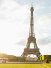
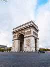

Paris
capitale de la France, est une grande ville européenne et un centre mondial de l'art,
de la mode, de la gastronomie et de la culture. Son paysage urbain du XIXe siècle est traversé par de larges
boulevards et la Seine.
Outre les monuments comme la tour Eiffel et la cathédrale gothique Notre-Dame du XIIe siècle, la ville est réputée
pour ses cafés et ses boutiques de luxe bordant la rue du Faubourg-Saint-Honoré
On connaît Paris pour être une des plus belles villes du monde, mais surtout parce que c’est la capitale de
la France. Or, cela n’a pas toujours été le cas. Au fil de l’histoire,
de nombreuses autres villes ont été la capitale de l’Hexagone plus ou moins longtemps. Voici donc le top 11
des villes qui ont été capitales de France. 1)
Tour Eiffel
Tour du XIXe siècle de 324 m de haut Célèbre tour en fer de Gustave Eiffel (1889), terrasses panoramiques accessibles
par escaliers et ascenseurs.

Arc de triomphe de l'Étoile
Arc de triomphe, monument national Arc de triomphe emblématique érigé pour commémorer les victoires de Napoléon,
avec plateforme d'observation.

Basilique du Sacré-Cœur de Montmartre
Basilique blanche en haut d'une colline Célèbre basilique blanche coiffée d'un dôme, achevée en 1914 avec mosaïques,
vitraux et crypte à l'intérieur.